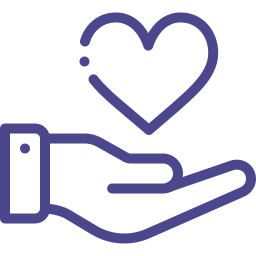

Pedir ajuda também é um passo
Conheça caminhos para encontrar apoio profissional e uma rede de acolhimento.
Um espaço de acolhimento, conhecimento e pequenas pausas para cuidar de você. Um passo de cada vez.
♡ Sem pressa. Sem julgamentos. Com você.


Cuidar da saúde mental pode ser desafiador, e encontrar informações confiáveis para entender as próprias emoções faz toda a diferença. Por isso, a Slowi reúne conteúdos informativos e atividades de reflexão em um só lugar.
Cada pessoa tem o seu próprio ritmo, e conhecer a si mesmo também é uma forma de cuidado. Aqui, você pode ir com calma, no seu tempo.
Na Slowi, ajudamos você a:
seu comportamento socioemocional
quando é hora de pedir ajuda
na sua jornada emocional
formas de cuidar de si
Escolha o que faz sentido agora. Você não precisa fazer tudo, nem fazer sozinho.
Emoções • Leitura de 5 min
Conteúdos claros para conhecer suas emoções e ampliar seu olhar sobre o cuidado.
Explorar conteúdos
Emoções • Leitura de 5 min
Conteúdos claros para conhecer suas emoções e ampliar seu olhar sobre o cuidado.
Explorar conteúdos
Seu check-in • Uma palavra já basta
Um check-in e um diário para registrar o que sente, sem precisar ter todas as respostas.
Conhecer meu espaço

Conheça caminhos para encontrar apoio profissional e uma rede de acolhimento.
Nosso bicho-preguiça é um lembrete carinhoso: a vida não precisa ser uma corrida. Ele acompanha suas descobertas, suas pausas e seus recomeços.
O Slowi não tem todas as respostas. Mas está aqui para lembrar que você pode se escutar com gentileza — e pedir apoio quando precisar.

Você merece acolhimento e o apoio adequado para o que está vivendo
Nossos conteúdos são informativos e de auxílio. Não oferecemos diagnóstico ou tratamento. Para cuidar da sua saúde mental, procure um profissional ou uma unidade de saúde próxima.